We perform gene set enrichment analysis of the driving genes in the HIV dataset.
Countlust output.
indices <- ExtractTopFeatures(topic_clus[[2]]$theta, top_features = 50, method = "poisson", options = "max")
imp_genes <- apply(indices, 1, function(x) return(rownames(topic_clus[[2]]$theta)[x]))We save the results
## [1] Innate Immune System
## [2] Neutrophil degranulation
## [3] Immune System
## [4] Aurora B signaling
## [5] Regulation of actin dynamics for phagocytic cup formation
## [6] Regulation of Actin Cytoskeleton
## [7] Aurora C signaling
## [8] Metal sequestration by antimicrobial proteins
## [9] Fcgamma receptor (FCGR) dependent phagocytosis
## [10] Antimicrobial peptides
## 51 Levels: akap95 role in mitosis and chromosome dynamics ...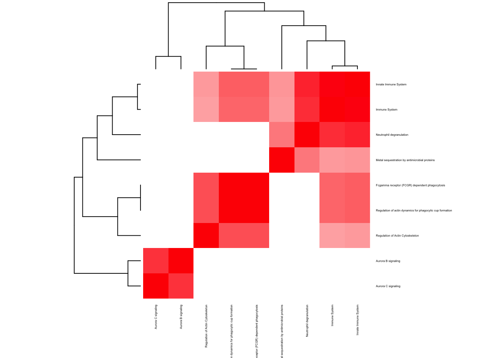
## [1] hemoglobins chaperone
## [2] Erythrocytes take up oxygen and release carbon dioxide
## [3] Erythrocytes take up carbon dioxide and release oxygen
## [4] O2/CO2 exchange in erythrocytes
## [5] Malaria - Homo sapiens (human)
## [6] Scavenging of heme from plasma
## [7] Metabolism of porphyrins
## [8] African trypanosomiasis - Homo sapiens (human)
## [9] Porphyrin and chlorophyll metabolism - Homo sapiens (human)
## [10] Binding and Uptake of Ligands by Scavenger Receptors
## 19 Levels: African trypanosomiasis - Homo sapiens (human) ...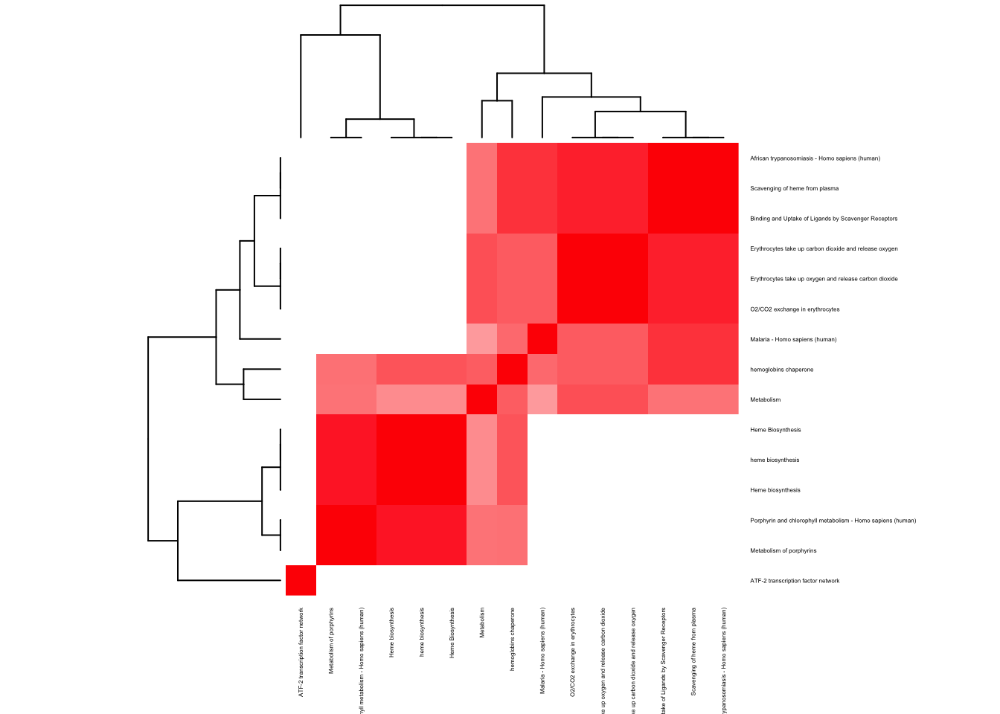
indices <- ExtractTopFeatures(topic_clus[[3]]$theta, top_features = 50, method = "poisson", options = "max")
imp_genes <- apply(indices, 1, function(x) return(rownames(topic_clus[[3]]$theta)[x]))We save the results
## [1] Immunoregulatory interactions between a Lymphoid and a non-Lymphoid cell
## [2] Translocation of ZAP-70 to Immunological synapse
## [3] Phosphorylation of CD3 and TCR zeta chains
## [4] PD-1 signaling
## [5] IL12-mediated signaling events
## [6] Downstream signaling in naïve CD8+ T cells
## [7] Immune System
## [8] granzyme a mediated apoptosis pathway
## [9] Primary immunodeficiency - Homo sapiens (human)
## [10] Generation of second messenger molecules
## 46 Levels: Adaptive Immune System ... Type I diabetes mellitus - Homo sapiens (human)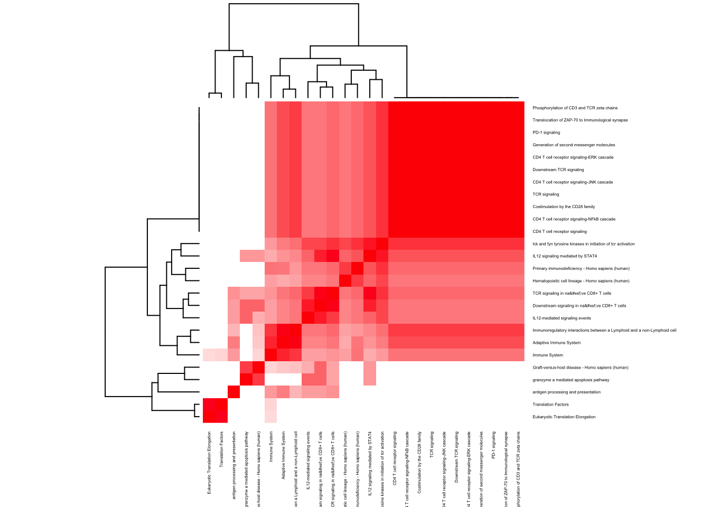
## [1] Neutrophil degranulation
## [2] Innate Immune System
## [3] Immune System
## [4] Endogenous TLR signaling
## [5] Phagosome - Homo sapiens (human)
## [6] Toll-Like Receptors Cascades
## [7] Regulation of TLR by endogenous ligand
## [8] Vitamin D Receptor Pathway
## [9] Platelet degranulation
## [10] Response to elevated platelet cytosolic Ca2+
## 54 Levels: Activated TLR4 signalling ...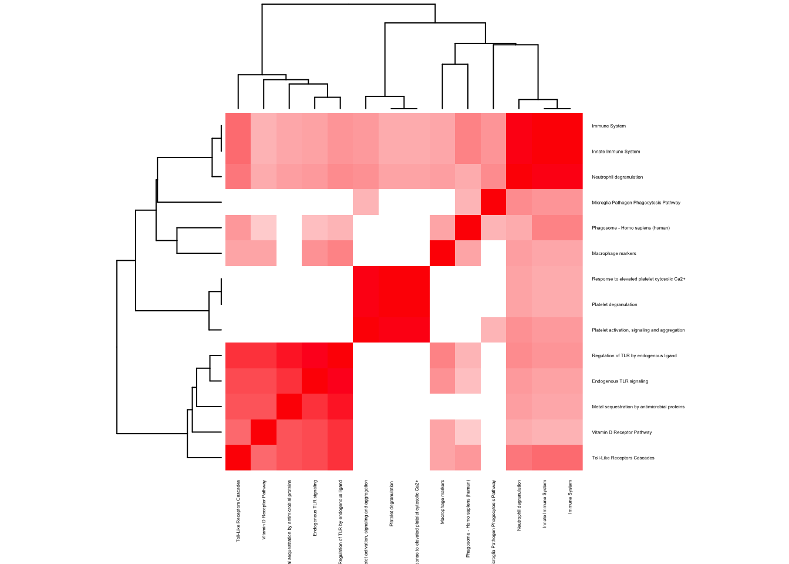
l <- 3
pathway2 <- read.delim(paste0("../utilities/aggregated_data/cluster_3/gene_names_clus_", l, ".tab"))
head(pathway2$pathway, 10)## [1] hemoglobins chaperone
## [2] Erythrocytes take up oxygen and release carbon dioxide
## [3] Erythrocytes take up carbon dioxide and release oxygen
## [4] O2/CO2 exchange in erythrocytes
## [5] Malaria - Homo sapiens (human)
## [6] Scavenging of heme from plasma
## [7] Metabolism of porphyrins
## [8] African trypanosomiasis - Homo sapiens (human)
## [9] Porphyrin and chlorophyll metabolism - Homo sapiens (human)
## [10] Binding and Uptake of Ligands by Scavenger Receptors
## 20 Levels: African trypanosomiasis - Homo sapiens (human) ...if(length(which(pathway2$q.value < 0.005)) > 2){
pathway2 <- pathway2[which(pathway2$q.value < 0.005),]
}
maxpath <- 75
pathway <- pathway2[1:min(maxpath, dim(pathway2)[1]), ]
ensembl_genes <- pathway$members_input_overlap
pathway_list_genes <- sapply(ensembl_genes, function(x) return(strsplit(as.character(x), "; ")))
all_genes <- Reduce(union, pathway_list_genes)
pathway_mat <- matrix(0, length(pathway_list_genes), length(all_genes))
for(l in 1:dim(pathway_mat)[1]){
pathway_mat[l, match(pathway_list_genes[[l]], all_genes)] <- 1
}
pathway_bimat <- (pathway_mat)%*%t(pathway_mat)
pathway_bimat_prop <- diag(1/sqrt(diag(pathway_bimat)), dim(pathway_bimat)[1]) %*% pathway_bimat %*% diag(1/sqrt(diag(pathway_bimat)), dim(pathway_bimat)[1])
col=c(rev(rgb(seq(1,0,length=1000),1,seq(1,0,length=1000))),
rgb(1,seq(1,0,length=1000),seq(1,0,length=1000)))
heatmap(pathway_bimat_prop, labRow = pathway$pathway, labCol = pathway$pathway, cexRow = 0.3, cexCol = 0.3, col = col, zlim = c(-1,1),
scale = "none", margins = c(5, 5))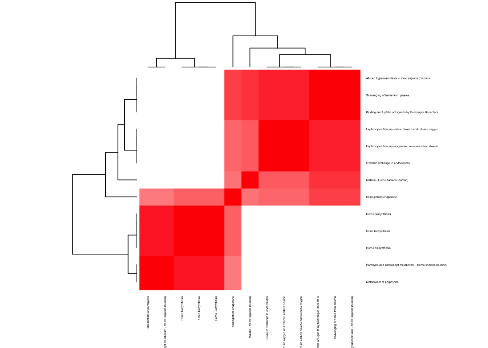
indices <- ExtractTopFeatures(topic_clus[[6]]$theta, top_features = 50, method = "poisson", options = "max")
imp_genes <- apply(indices, 1, function(x) return(rownames(topic_clus[[6]]$theta)[x]))We save the results
## [1] Natural killer cell mediated cytotoxicity - Homo sapiens (human)
## [2] Immunoregulatory interactions between a Lymphoid and a non-Lymphoid cell
## [3] Immune System
## [4] IL12-mediated signaling events
## [5] Downstream signaling in naïve CD8+ T cells
## [6] Adaptive Immune System
## [7] granzyme a mediated apoptosis pathway
## [8] Graft-versus-host disease - Homo sapiens (human)
## [9] Fc gamma R-mediated phagocytosis - Homo sapiens (human)
## [10] Innate Immune System
## 55 Levels: activation of csk by camp-dependent protein kinase inhibits signaling through the t cell receptor ...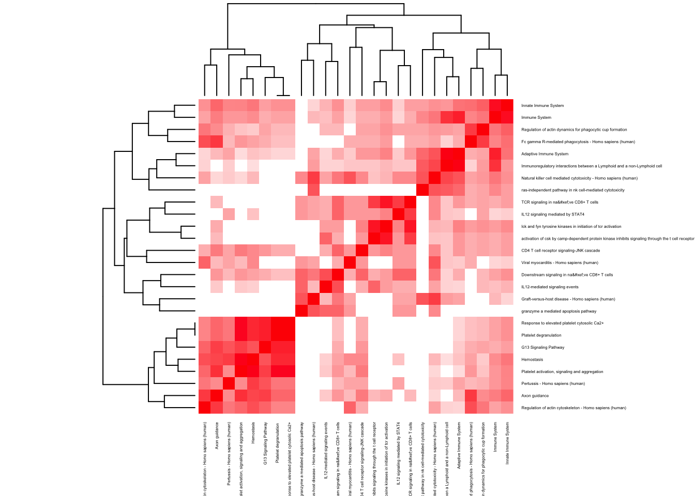
## [1] Generation of second messenger molecules
## [2] Translocation of ZAP-70 to Immunological synapse
## [3] TCR
## [4] Phosphorylation of CD3 and TCR zeta chains
## [5] PD-1 signaling
## [6] TCR signaling
## [7] CD4 T cell receptor signaling-ERK cascade
## [8] Downstream TCR signaling
## [9] CD4 T cell receptor signaling-JNK cascade
## [10] lck and fyn tyrosine kinases in initiation of tcr activation
## 63 Levels: activation of csk by camp-dependent protein kinase inhibits signaling through the t cell receptor ...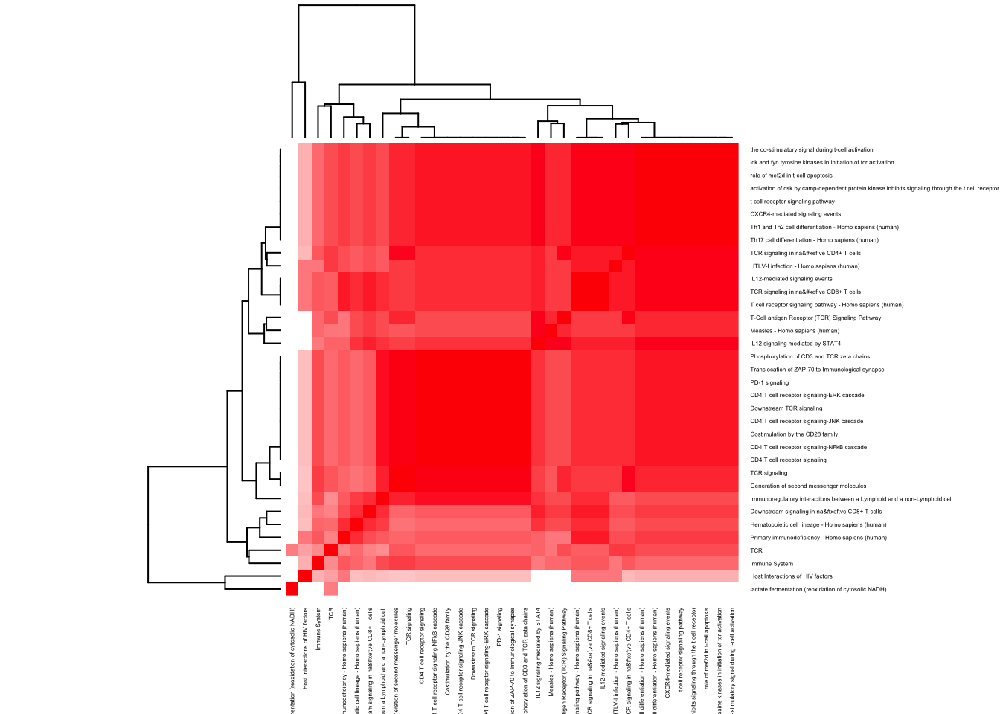
## [1] Neutrophil degranulation
## [2] Innate Immune System
## [3] Immune System
## [4] Toll-Like Receptors Cascades
## [5] Endogenous TLR signaling
## [6] Regulation of TLR by endogenous ligand
## [7] Vitamin D Receptor Pathway
## [8] Osteoclast differentiation - Homo sapiens (human)
## [9] Prostaglandin Synthesis and Regulation
## [10] Metal sequestration by antimicrobial proteins
## 79 Levels: Activated TLR4 signalling ... ZBP1(DAI) mediated induction of type I IFNs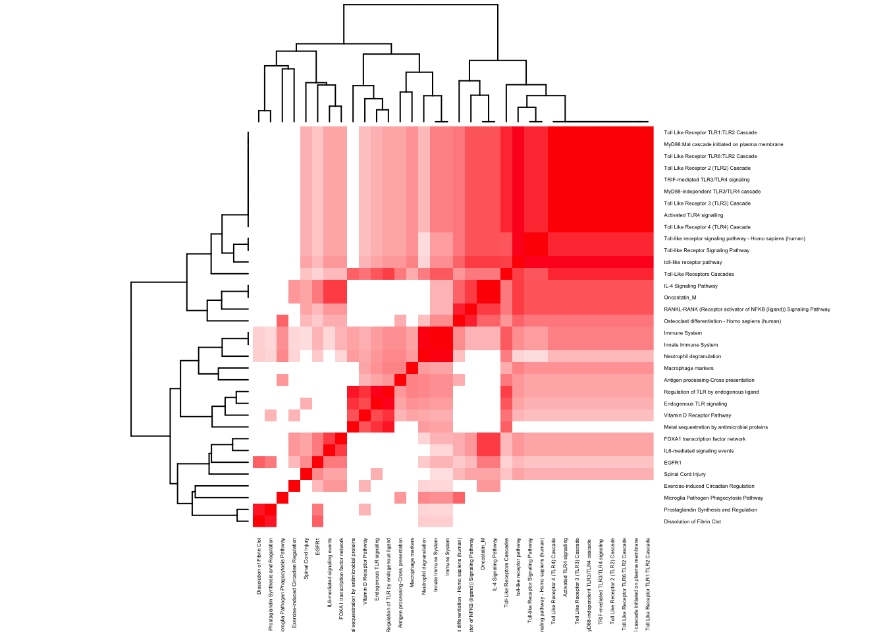
## [1] CD22 mediated BCR regulation
## [2] Antigen activates B Cell Receptor (BCR) leading to generation of second messengers
## [3] Cell surface interactions at the vascular wall
## [4] BCR
## [5] Signaling by the B Cell Receptor (BCR)
## [6] Immune System
## [7] bcr signaling pathway
## [8] B cell receptor signaling
## [9] Adaptive Immune System
## [10] Hemostasis
## 90 Levels: Activated TLR4 signalling ...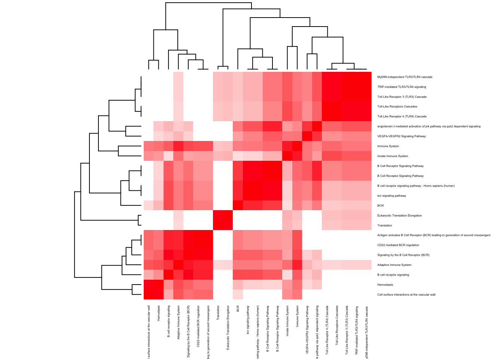
## [1] hemoglobins chaperone
## [2] Erythrocytes take up oxygen and release carbon dioxide
## [3] Erythrocytes take up carbon dioxide and release oxygen
## [4] O2/CO2 exchange in erythrocytes
## [5] Malaria - Homo sapiens (human)
## [6] Metabolism of porphyrins
## [7] heme biosynthesis
## [8] Heme Biosynthesis
## [9] Heme biosynthesis
## [10] Scavenging of heme from plasma
## 28 Levels: Acute Intermittent Porphyria ...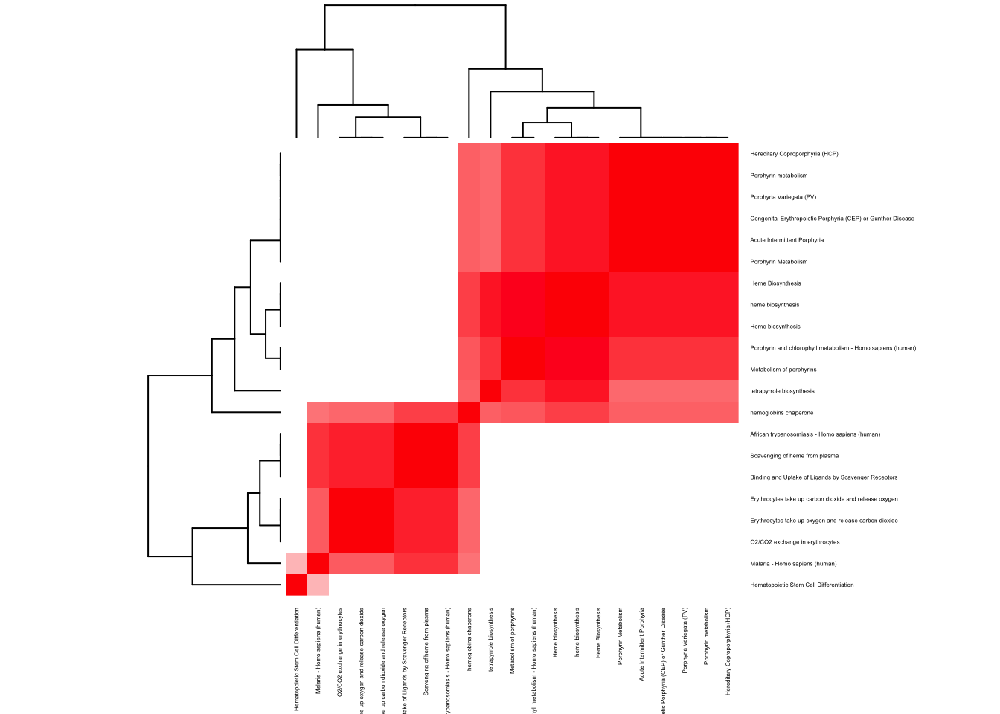
## [1] Platelet activation, signaling and aggregation
## [2] Platelet degranulation
## [3] Response to elevated platelet cytosolic Ca2+
## [4] Hemostasis
## [5] RHO GTPases activate PKNs
## [6] B-WICH complex positively regulates rRNA expression
## [7] Positive epigenetic regulation of rRNA expression
## [8] Meiotic recombination
## [9] RNA Polymerase I Promoter Opening
## [10] DNA methylation
## 76 Levels: Activated PKN1 stimulates transcription of AR (androgen receptor) regulated genes KLK2 and KLK3 ...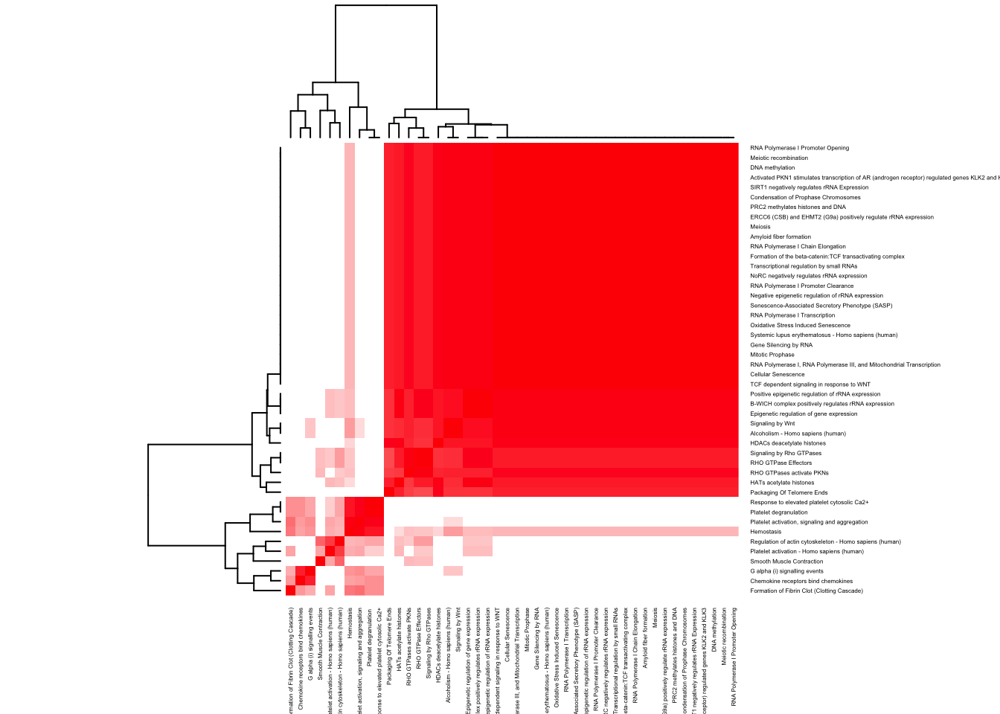
This R Markdown site was created with workflowr